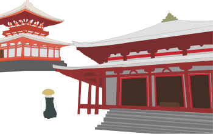
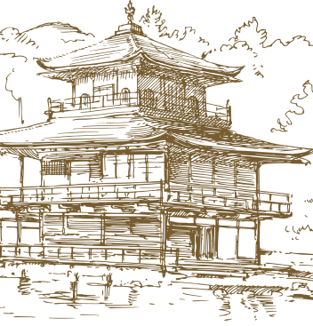

Sanctuaires, palais impériaux, temples historiques classés au patrimoine de l’UNESCO* ou encore jardins zen et ses maisons en bois. Situé dans la région du Kansai au sud-ouest du lac Biwa, Kyoto anciennement appelé Heian-Kyo avant la restauration Meiji* est une des villes les plus touristiques du Japon.
Malgré une taille plutôt modeste avec une surface de 800km² pour moins de 500 000 habitants, son identité traditionnelle que ce soit environnemental ou architectural est l’atout qui attirent les occidentaux.
Kyoto nommée capitale culturelle du Japon attirent plus de 50 millions de touristes chaque année et a même été classée « meilleure grande ville du monde » par le célèbre magazine Condé Nast Traveler
L’ancienne capitale sous l’ère d’Edo affiche un charme unique avec une beauté tout aussi indescriptible et cela est une fierté pour le peuple japonais.
Mais Kyoto se modernise aussi affichant deux visages totalement différents, l’un représente le coté historique avec ses quartiers culturels tant dis que l’autre face est une métropole peuplée et agitée qui a su s’adaptée au monded’aujourd'hui. Si vous voulez trouver ce côté traditionnel il va vous falloir soit une map ou soit un guide pour vous éloigner du centre et ainsi trouver votre bonheur !
Derrière cette belle facette qu’est Kyoto, se trouve malgré tous des aspects problématiques en raison de l’extrême taux de touristes envahissant pour une si petite ville lui faisant perdre son esprit traditionnel. Paradoxalement la crise du covid a emmené Kyoto à se trouver en quasi-faillite du a la pénurie de touristes lors de cette période créant une dette à hauteur de 7 milliards d’euros en 2020
Si vous êtes fan du japon et son ambiance mystique Kyoto reste une ville gorgée d’endroits spectaculaire à voir de ses propres yeux au moins une fois dans sa vie, Kyoto est une expérience à vivre unique en son genre.